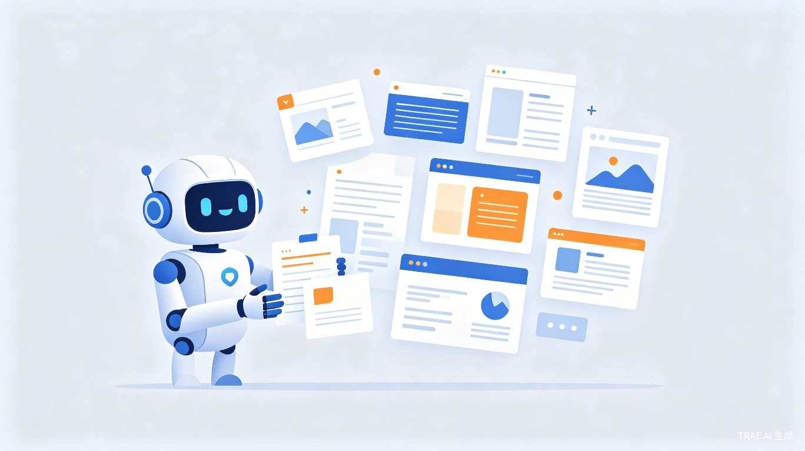
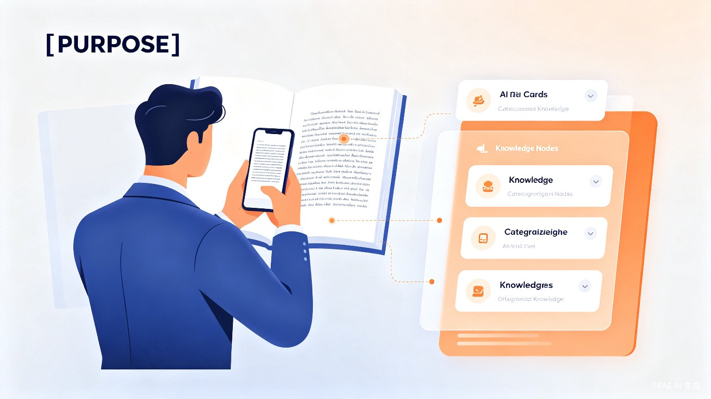
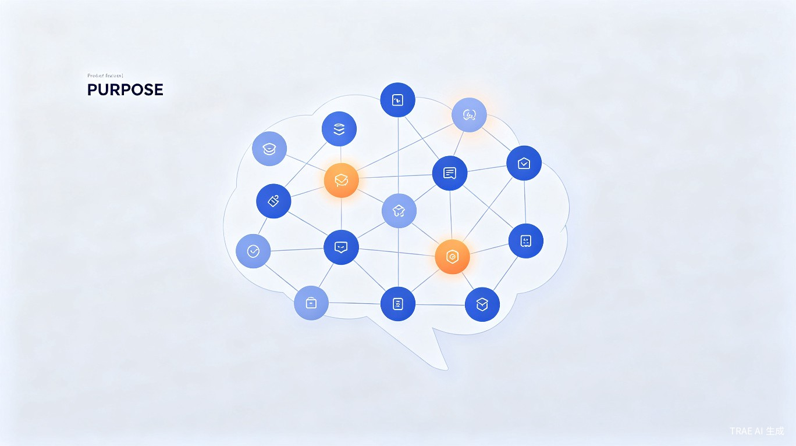

一键智能采集
支持多种内容输入方式：拍照识别文字、网页剪藏、语音转文字、文件导入。AI自动提取关键信息，无需手动复制粘贴。
无论是书籍段落、会议记录、网页文章还是灵感想法，都能快速收录到知识库中。
AI驱动的个人知识管理系统 —— 让知识真正为你所用

在信息爆炸的时代，我们每天接触大量内容，却难以有效吸收和复用。知识管家是一款基于AI技术的个人知识管理应用，通过智能采集、自动分类、知识关联和主动复习等功能，帮助用户构建属于自己的"第二大脑"。
想解决什么问题：现代人面临信息过载、知识遗忘快、笔记整理耗时、知识之间缺乏关联等痛点，导致学习效率低下，知识无法转化为能力。
灵感来源：受到Zettelkasten卡片盒笔记法和 spaced repetition 间隔重复理论的启发，结合大语言模型的语义理解能力，我们希望打造一款真正懂你的知识管理助手。
产品形态：跨平台应用（iOS/Android App + Web端 + 浏览器插件），支持多端同步，随时随地记录和回顾。

支持多种内容输入方式：拍照识别文字、网页剪藏、语音转文字、文件导入。AI自动提取关键信息，无需手动复制粘贴。
无论是书籍段落、会议记录、网页文章还是灵感想法，都能快速收录到知识库中。

AI自动分析知识内容，建立知识点之间的关联网络。当你查看一条笔记时，系统自动推荐相关内容，帮助你发现知识间的隐藏联系。
支持双向链接、标签体系和图谱可视化，让知识结构一目了然。
AI自动识别内容主题，智能归类到对应知识领域，告别手动整理。
基于间隔重复算法，在最佳时机推送复习内容，巩固长期记忆。
不用记住关键词，用自然语言描述即可找到相关内容，真正懂你。
一键生成知识摘要、思维导图、学习卡片，支持导出分享。
知识工作者：程序员、设计师、产品经理、研究人员、律师、医生等需要持续学习和积累专业知识的人群。
终身学习者：大学生、考研党、考证人群、语言学习者等需要系统化管理学习资料的人群。
内容创作者：作家、博主、自媒体人、记者等需要收集素材和整理思路的人群。
传统笔记方式中，用户需要花费大量时间进行手动分类、整理和回顾。知识管家通过AI自动化处理，将知识整理时间减少70%，让用户把精力集中在学习和思考上。
智能复习系统基于艾宾浩斯遗忘曲线和间隔重复算法，在最佳时机推送复习内容，记忆保持率提升3倍以上。
知识管理工具市场正处于高速增长期。随着远程办公和终身学习趋势的普及，个人知识管理需求持续上升。
商业模式采用免费增值（Freemium）模式：基础功能免费，高级功能（无限存储、AI高级分析、团队协作）订阅收费。同时可拓展B端企业知识管理服务。
知识管家帮助每个人更好地管理和利用自己的知识资产，降低学习门槛，提升全民学习效率。在信息过载的时代，让知识真正转化为个人竞争力，促进知识型社会的建设。
flowchart TB
subgraph 输入层["内容输入层"]
A1[拍照识别]
A2[网页剪藏]
A3[语音输入]
A4[文件导入]
A5[手动输入]
end
subgraph AI处理层["AI智能处理层"]
B1[OCR识别]
B2[语义分析]
B3[自动分类]
B4[实体提取]
B5[关联推荐]
end
subgraph 存储层["知识存储层"]
C1[(知识图谱)]
C2[(笔记数据库)]
C3[(用户画像)]
end
subgraph 输出层["智能输出层"]
D1[语义搜索]
D2[复习推送]
D3[知识图谱]
D4[摘要生成]
D5[导出分享]
end
A1 --> B1
A2 --> B2
A3 --> B2
A4 --> B1
A5 --> B2
B1 --> B3
B2 --> B3
B3 --> B4
B4 --> B5
B3 --> C2
B4 --> C1
B5 --> C1
C1 --> D3
C2 --> D1
C2 --> D4
C3 --> D2
D1 --> D5
D4 --> D5
图3：知识管家系统架构图
基于GPT/Claude等先进LLM，实现语义理解、自动摘要、知识关联和智能问答。
使用Pinecone/Milvus存储知识向量，实现毫秒级语义相似度搜索。
构建实体关系图谱，可视化知识关联，支持图遍历查询。
基于云端架构，实现iOS、Android、Web、浏览器插件多端实时同步。
知识管家，你的AI知识管理助手。从采集到应用，全流程智能化，打造属于你的第二大脑。